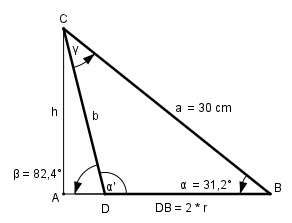

Aufgabe 177 Ein schiefer Kegel hat eine längste Mantellinie von 30 cm, mit einemNeigungswinkel von 31,2°. Seine kürzeste hat einen Neigungswinkel von 82,4°. Wie groß ist das Volumen V des Kegels?

Im Dreieck ABC: h sin 31,2° = --- | *a a h = a * sin 31,2° = 30 cm * 0,518 = 15,5 cm Im Dreieck ADC: h sin 82,4° = --- | *b b b * sin 82,4° = h | :sin 82,4° h 15,5 cm b = ----------- = ---------- = 15,6 cm sin 82,4° 0,9912 α’ = 180° - β = 180° - 82,4° = 97,6° γ = 180° - α’ – α = 180° - 97,6° - 31,2° = 51,2° Fall SWW: Sinussatz: 2 * r a -------- = -------- | *sin γ sin γ sin α’ a * sin γ 2 * r = ----------- | *2 sin α’ a * sin γ r = -------------- = 2 * sin α’ 30 cm * sin 51,2° 30 cm * 0,7783 = ------------------- = ---------------- = 2 * sin 97,6° 2 * 0,9912 = 11,8 cm r2 * π * h V = ------------- = 3 11,82 cm2 * π * 15,5 cm = ------------------------- = 2 258,9 cm3 3